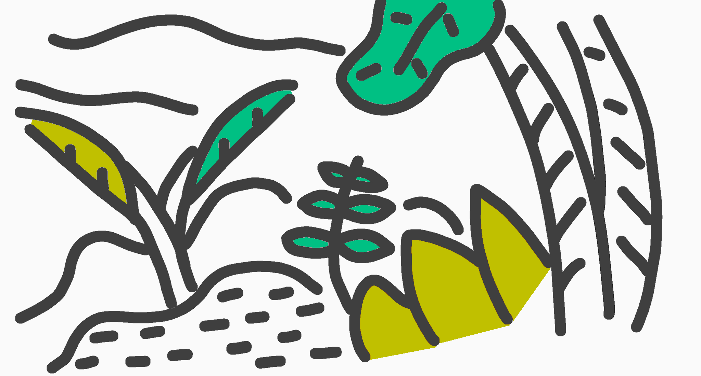

<!DOCTYPE html>

<html>

<head>
  <meta charset="utf-8">
  <title></title>
  <link rel="stylesheet" href="style.css">
  <link rel="preconnect" href="https://fonts.gstatic.com">
  <link href="https://fonts.googleapis.com/css2?family=Pacifico&family=Satisfy&family=Stoke&family=Yellowtail&family=Geo&family=Oswald&family=Lobster&family=Cookie&family=Chewy&family=Limelight&family=Sacramento&family=Plaster&display=swap" rel="stylesheet">
</head>

<body bgcolor="#e6ffea"></body>

<body  background="背景透過のきゅうり.png">

<header>
<br>
<br>
<h1 align=center><font color="#004d00">きゅうりやさいのほーむぺーじ。</font></h1>
<h3 align=center><a href=”http://www.youtube.com/@kyuuri_yasai”>youTube見てね</a></h3>
<br>
<br>
</header>

<frameste cols="30%,70%">

<hr size=2% noshade>
<h2 align=center><font color="#004d00">きゅうりやさい</font>とは！</h2>
<h3 align=center>見た目はきゅうり、中身もきゅうり、その名もきゅうり。</h3>
<h3 align=center>チャンネル登録者１万人を超える事を目標にしています！</h3>
<h3 align=center>将来の夢は、コンセントでパスタを食べることです。</h3>
<h3 align=center>主にロブロックスとなんか作ってます。</h3>
<h2 align=center>見てね（圧）</h2>
<hr size=2%>

<body>
<div style="text-align: center;"></div>
<body>
<h4 align=center>↑ジャングル（？）</h4>
  
</html>
